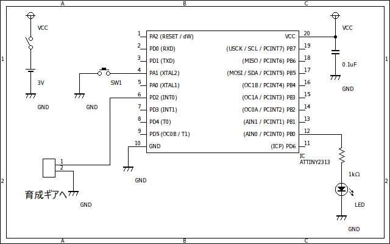

初代育成ギア用サンドバッグ
記事作成 : 2016/11/28(月)
はじめに
デジモンの育成ギアにおける通信対戦は非常に重要な要素です。 どの育成ギアでも完全体以上に進化するためには一定以上の対戦回数と勝率が必要になります。 逆に言えば、対戦しないと成熟期までしか進化できないことを意味します。 昔であれば友達なんかと対戦すればよかったのですが、今になって物置などからひょっこり出てきて久しぶりに遊んでみたいと思っても、 育成ギアが1つだけではどうしようもありません。
そこで、マイコンを使って育成ギアの通信信号を生成して疑似的に対戦できる回路を作成してみました。 原理は初代育成ギアの通信解析結果を見ると分かると思いますが、勝敗を決定するフィールドを必ず負けにするだけです。 初代育成ギアの通信はD-Linkで通信するギアは全て対応してるので多くのギアのサンドバッグとして使うことができます。
設計
まずは回路を設計します。 回路といっても今回は育成ギアとマイコンをつなげるだけなので、以前作った無線化の回路よりよっぽど簡単です。 下の図がその回路図です。
マイコンは手元にあったattiny2313を使用することにしました。 また、電源は育成ギアと電圧を同じくらいにするためにコイン電池を用いています。 それと、通信を開始するためのスイッチを1つと動作確認用にLEDをつけてます。
処理の流れは以下のようになっています。
- スイッチが押される
- マイコンから最初のフレームが送信する
- 育成ギアからのフレームを受信する
- マイコンから次のフレームを送信する
- 育成ギアからフレームを受信する
これもまあ通信解析のページに載せてるプログラムとほとんど違いはありません。 ちなみに送信するデータは進化表位置が0011で、バージョンが0000に設定しました。 つまりアグモンのデータとなります。 勝敗は負けなので0010になり努力値のところはよくわからないので0000にしました。 したがって送信するフレームは下のもので固定となります。
- 1110110000010011
- 1111110100000010
これで実際に通信を行った様子が下の動画です。
ちゃんと通信して、しかも勝つことができています! これなら勝率100%も余裕です。 まあ、文字どおりチートですけどね。
制作
動作の確認ができたので最後に回路をユニバーサル基板上に作ります。 回路のケースには電子工作でおなじみ(?)のフリスクの箱を使うことにしました。 下の写真が完成品です。 制作途中の写真は撮り忘れていたのでありません。
D-Linkのコネクタ部分は高さがギリギリでしたが、一応おさまってくれました。 コネクタの金属部分は加工しやすいアルミ板を使用しました。 けど、アルミ板はハンダ付けができないらしく、仕方なく針金(抵抗の足)で抑えつけて固定してます。 それとコネクタを固定する突起の部分ですが、これは綿棒の柄の部分を切って使ってます。 本当はちゃんとしたプラスチックの棒材を使おうと思ってたのですが、全然売ってなかったので代用品ということです。
ちなみに、フタを閉じるとこんな感じです。
回路の制作はよくやるのですが、ケースの加工といったことはほとんどやったことがないので近くでみると結構汚いです。 これからはもっとケース加工の技術も高めていきたいところです。
ちなみに、今回使ったプログラムは残念なことに以前使ってたノートPCがお亡くなりになった際にいっしょに消えてしまいましたので配布することができません。 まあでも大して複雑なことはやってないので特に問題はないかなと思います。